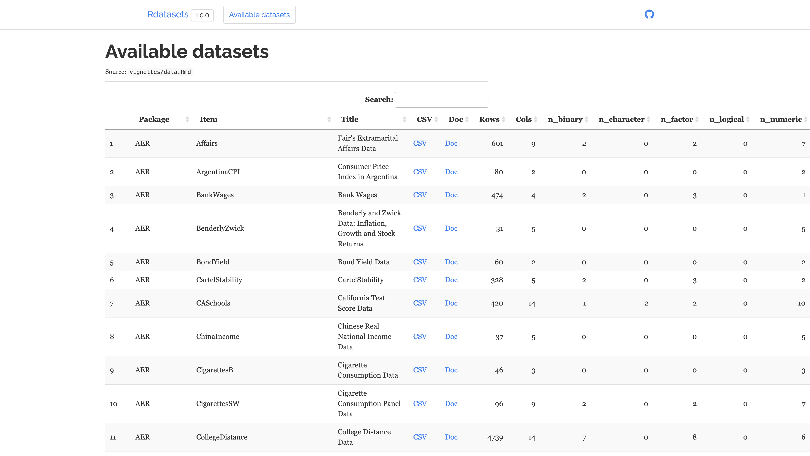

1.3. 예제 데이터#
데이터 분석의 실습을 위해서는 예제 데이터가 필요하다. 이 책에서는 설명에 필요할 때마다 예제 데이터를 다운로드 받는 방법을 알려줄 것이다. 일부 데이터는 분석용 패키지에 미리 내장되어 있는 예제 데이터를 사용하기도 한다. 하지만 이 책에서 쓰는 대부분의 데이터는 다음과 같은 패키지의 기능을 사용하여 인터넷으로부터 얻는다.
pandas 패키지
statsmodels 패키지
pandas-datareader 패키지
이 절에서는 이러한 패키지들을 사용하여 인터넷 상의 데이터를 얻는 법을 설명한다.
1.3.1. pandas 패키지#
pandas 패키지는 인터넷에 있는 각종 파일을 읽어 데이터프레임 형식으로 바꿀 수 있는 명령어를 제공한다. 예를 들어 csv 파일은 다음과 같이 read_csv 명령으로 읽을 수 있다.
import pandas as pd
pd.read_csv("http://www.stern.nyu.edu/~wgreene/Text/Edition7/TableF1-1.csv")
| Year | X | C | |
|---|---|---|---|
| 0 | 2000 | 8559.4 | 6830.4 |
| 1 | 2001 | 8883.3 | 7148.8 |
| 2 | 2002 | 9060.1 | 7439.2 |
| 3 | 2003 | 9378.1 | 7804.0 |
| 4 | 2004 | 9937.2 | 8285.1 |
| 5 | 2005 | 10485.9 | 8819.0 |
| 6 | 2006 | 11268.1 | 9322.7 |
| 7 | 2007 | 11894.1 | 9826.4 |
| 8 | 2008 | 12238.8 | 10129.9 |
| 9 | 2009 | 12030.3 | 10088.5 |
1.3.2. statsmodels 패키지#
statsmodels에는 rdatasets라는 데이터셋을 가져올 수 있는 명령어를 제공한다. rdatasets 데이터셋은 이름에서 볼 수 있듯이 원래는 다양한 R 언어용 패키지들에서 제공하는 데이터를 모아놓은 것이다. 다음 웹사이트에 데이터의 상세한 목록과 설명은 확인할 수 있다.
다음 그림은 위 웹사이트의 화면을 보인 것이다.

이 화면의 표에서 가장 왼쪽의 “Package” 열과 “Item” 열에 주목해야 한다. “Package”는 해당 데이터를 포함하는 R 패키지 이름이고 “Item”은 그 패키지 내에서 해당 데이터를 가리키는 이름이다. 우리가 rdatasets 패키지에서 데이터를 선택할 때는 이 두가지 값을 이용하여 데이터를 지정한다. 예를 들어 두번째 데이터인 아르헨티나의 소비자 가격지수(Consumer Price Index in Argentina) 데이터를 지정할 때는 "AER", "ArgentinaCPI" 문자열 쌍을 이용해야 한다.
실제로 데이터를 가져오는 명령은 다음과 같다. 일단 sm이라는 별칭으로 statsmodels 패키지의 api 서브패키지를 임포트한다.
import statsmodels.api as sm
다음으로 sm.datasets 서브패키지에 있는 get_rdataset 명령을 수행한다. 이 때 데이터 “Item” 이름과 “Package” 이름을 인수로 넣어준다. “Item”이 “Package”보다 앞에 온다는 점에 주의하라. 예를 들어 위에서 말한 “AER” 패키지의 “ArgentinalCPI” 데이터를 가져오려면 다음과 같이 주피터랩에 입력하면 된다. 데이터는 Pandas의 데이터프레임 형식으로 출력된다. 이 명령은 인터넷에서 데이터를 가져오는 명령이므로 컴퓨터가 인터넷에 연결되어 있어야 한다.
df = sm.datasets.get_rdataset("ArgentinaCPI", "AER").data
df
| time | value | |
|---|---|---|
| 0 | 1970.00 | 1.010000e+00 |
| 1 | 1970.25 | 1.060000e+00 |
| 2 | 1970.50 | 1.130000e+00 |
| 3 | 1970.75 | 1.240000e+00 |
| 4 | 1971.00 | 1.330000e+00 |
| ... | ... | ... |
| 75 | 1988.75 | 1.557700e+08 |
| 76 | 1989.00 | 2.031300e+08 |
| 77 | 1989.25 | 6.799600e+08 |
| 78 | 1989.50 | 4.537300e+09 |
| 79 | 1989.75 | 6.611700e+09 |
80 rows × 2 columns